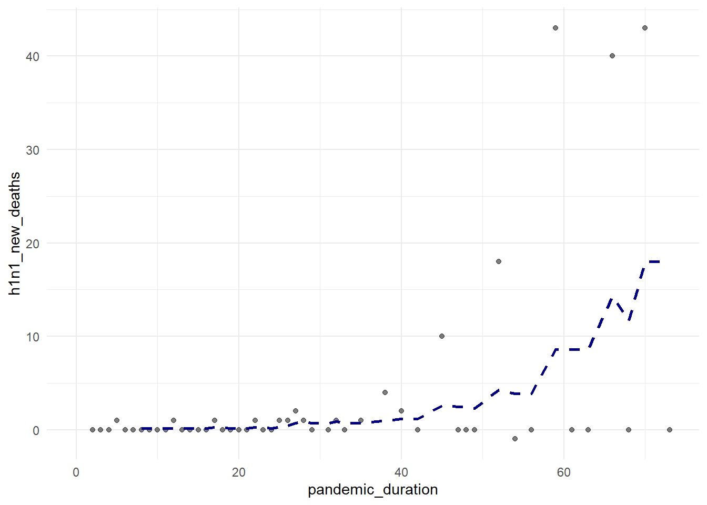
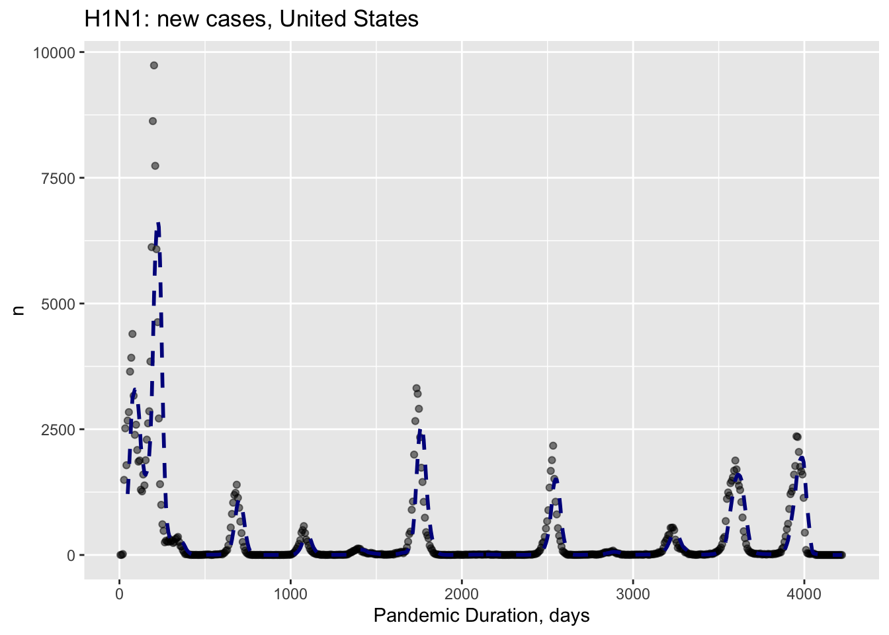
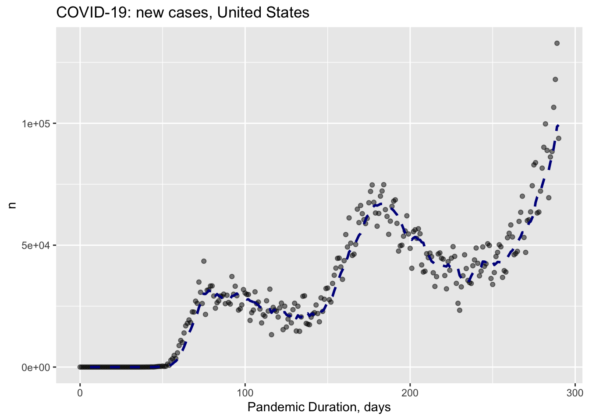

final_project_working_copy
Matthew Lawlor
11/9/2020
Read and tidy
H1N1
h1n1_df = read.csv("./data/h1n1_data.csv") %>%
janitor::clean_names() %>%
select(-link) %>%
mutate(
date = as.Date(date, "%m/%d/%y"),
pandemic_interval = "2009/04/24" %--% date,
pandemic_duration = as.duration(pandemic_interval) / ddays(1)
) %>%
arrange(pandemic_duration) %>%
rename(h1n1_cumulative_cases = cumulative_no_of_cases, h1n1_cumulative_deaths = cumulative_no_of_deaths)
save(h1n1_df, file = "h1n1_df.rda")
h1n1_us =
h1n1_df %>%
filter(country == "United States of America") %>%
mutate(
h1n1_new_cases = h1n1_cumulative_cases - lag(h1n1_cumulative_cases),
h1n1_new_deaths = h1n1_cumulative_deaths - lag(h1n1_cumulative_deaths)
)COVID-19
US
covid_us_cases = read.csv("./data/case_daily_trends_united_states.csv", skip = 3) %>%
janitor::clean_names() %>%
select(-x7_day_moving_avg) %>%
mutate(
date = as.Date(date, "%b %d %Y"),
pandemic_interval = "2020/01/22" %--% date,
pandemic_duration = as.duration(pandemic_interval) / ddays(1)
) %>%
rename(covid_new_cases = new_cases) %>%
arrange(pandemic_duration) %>%
mutate(
covid_cumulative_cases = CUMULATIVE_SUM(covid_new_cases)
)
covid_us_deaths = read.csv("./data/death_daily_trends_united_states.csv", skip = 3) %>%
janitor::clean_names() %>%
select(-x7_day_moving_avg) %>%
mutate(
date = as.Date(date, "%b %d %Y"),
pandemic_interval = "2020/01/22" %--% date,
pandemic_duration = as.duration(pandemic_interval) / ddays(1)
) %>%
rename(covid_new_deaths = new_deaths) %>%
arrange(pandemic_duration) %>%
mutate(
covid_cumulative_deaths = CUMULATIVE_SUM(covid_new_deaths)
)Visualization
US H1N1
New cases
h1n1_us %>%
ggplot(aes(x = pandemic_duration, y = h1n1_new_cases)) +
geom_point(alpha = .5) +
geom_ma(ma_fun = SMA, n = 7, size = 1)## Warning: Removed 1 rows containing missing values (geom_point).
Cumulative cases
h1n1_us %>%
ggplot(aes(x = pandemic_duration, y = h1n1_cumulative_cases)) +
geom_point(alpha = .5) +
geom_ma(ma_fun = SMA, n =7, size = 1)New deaths
h1n1_us %>%
ggplot(aes(x = pandemic_duration, y = h1n1_new_deaths)) +
geom_point(alpha = .5) +
geom_ma(ma_fun = SMA, n = 7, size = 1)## Warning: Removed 1 rows containing missing values (geom_point).
Cumulative deaths
h1n1_us %>%
ggplot(aes(x = pandemic_duration, y = h1n1_cumulative_deaths)) +
geom_point(alpha = .5) +
geom_ma(ma_fun = SMA, n = 7, size = 1)
US COVID-19
New cases
covid_us_cases %>%
ggplot(aes(x = pandemic_duration, y = covid_new_cases)) +
geom_point(alpha = .5) +
geom_ma(ma_fun = SMA, n = 7, size = 1)
Cumulative cases
covid_us_cases %>%
ggplot(aes(x = pandemic_duration, y = covid_cumulative_cases)) +
geom_point(alpha = .5) +
geom_ma(ma_fun = SMA, n = 7, size = 1)
New deaths
covid_us_deaths %>%
ggplot(aes(x = pandemic_duration, y = covid_new_deaths)) +
geom_point(alpha = .5) +
geom_ma(ma_fun = SMA, n = 7, size = 1)
Cumulative deaths
covid_us_deaths %>%
ggplot(aes(x = pandemic_duration, y = covid_cumulative_deaths)) +
geom_point(alpha = .5) +
geom_ma(ma_fun = SMA, n = 7, size = 1)Merge US H1N1 and COVID-19 data
us_cases =
full_join(h1n1_us, covid_us_cases, by = "pandemic_duration") %>%
select(-date.x, -country, -pandemic_interval.x, -date.y, -pandemic_interval.y)
us_df =
full_join(us_cases, covid_us_deaths, by = "pandemic_duration") %>%
select(-date, -pandemic_interval) %>%
relocate(pandemic_duration, h1n1_new_cases, h1n1_cumulative_cases, covid_new_cases, covid_cumulative_cases, h1n1_new_deaths, h1n1_cumulative_deaths, covid_new_deaths, covid_cumulative_deaths) %>%
arrange(pandemic_duration) %>%
pivot_longer(
h1n1_new_cases:covid_cumulative_deaths,
names_to = "class",
values_to = "n"
) %>%
separate(class, into = c("disease", "trend"), sep = "_", extra = "merge")New cases
us_df %>%
filter(trend == "new_cases") %>%
ggplot(aes(x = pandemic_duration, y = n, color = disease)) +
geom_point() +
geom_smooth(se = FALSE)## `geom_smooth()` using method = 'loess' and formula 'y ~ x'## Warning: Removed 242 rows containing non-finite values (stat_smooth).## Warning: Removed 242 rows containing missing values (geom_point).
Cumulative cases
us_df %>%
filter(trend == "cumulative_cases") %>%
ggplot(aes(x = pandemic_duration, y = n, color = disease)) +
geom_point() +
geom_smooth(se = FALSE)## `geom_smooth()` using method = 'loess' and formula 'y ~ x'## Warning: Removed 241 rows containing non-finite values (stat_smooth).## Warning: Removed 241 rows containing missing values (geom_point).
New deaths
us_df %>%
filter(trend == "new_deaths") %>%
ggplot(aes(x = pandemic_duration, y = n, color = disease)) +
geom_point() +
geom_smooth(se = FALSE)## `geom_smooth()` using method = 'loess' and formula 'y ~ x'## Warning: Removed 242 rows containing non-finite values (stat_smooth).## Warning: Removed 242 rows containing missing values (geom_point).
Cumulative deaths
us_df %>%
filter(trend == "cumulative_deaths") %>%
ggplot(aes(x = pandemic_duration, y = n, color = disease)) +
geom_point() +
geom_smooth(se = FALSE)## `geom_smooth()` using method = 'loess' and formula 'y ~ x'## Warning: Removed 241 rows containing non-finite values (stat_smooth).## Warning: Removed 241 rows containing missing values (geom_point).